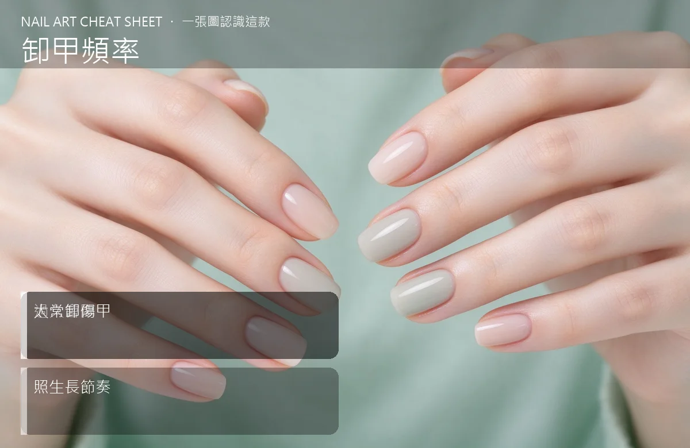

美甲卸甲頻率是什麼？入門入門攻略
凝膠不是做越久越好，也不是想卸就卸，3–4 週回補一次，是對指甲最溫柔的節奏。
卸甲頻率原理與辨識重點：美甲師不說的過久會悶
指甲每個月大約長 3 毫米，凝膠做完 3–4 週後，指根會跑出一截新長出來的真甲，看起來「空空的」。這時候要嘛回補（補前面長出來的縫），要嘛整副卸掉讓指甲休息。太久不處理，凝膠容易卡髒東西、起翹；太常全卸重貼，真甲一直被磨、被泡，很快就薄、就脆。
誰適合做卸甲頻率？顧客常問對號入座
所有做凝膠的客人都要懂這件事；尤其工作需要常換款、或指甲本來就偏薄、容易斷裂的人，更要抓對自己的節奏。
卸甲頻率美甲施作步驟：每3-4週回補
固定 3–4 週回店一次 → 美甲師評估真甲狀況：健康就回補、偏薄就整副卸掉休息 1–2 週 → 卸完一週內天天擦指緣油 → 指甲長回來、甲面變厚再重新做。
卸甲頻率優缺點分析：美甲持久度與傷甲評估
| 優點 | 說明 |
|---|---|
| 抓對節奏，指甲可以一直維持漂亮又健康，不會因為長期做美甲變薄變脆。 | 是通用流派的招牌，入門就能上手 |
| 缺點 | 說明 |
| 需要固定排時間回店，不能想做就做、想卸就隨便撕，節奏跑掉對指甲傷害很大。 | 前置與最傷指甲的兩種極端：一種是「一副撐兩三個月不處理」，結果凝膠底下發霉、甲床染色；另一種是「每週換款、硬摳重貼」，一個月下來指甲薄到可以彎。兩種都要避免。沒顧好會打折 |

卸甲頻率新手雷區：太常卸傷甲與常見錯誤
注意：最傷指甲的兩種極端：一種是「一副撐兩三個月不處理」，結果凝膠底下發霉、甲床染色；另一種是「每週換款、硬摳重貼」，一個月下來指甲薄到可以彎。兩種都要避免。
卸甲頻率和其他美甲做法的差別比較
「回補」跟「卸甲」不一樣：回補是把指根新長出來的縫補起來，整副舊凝膠留著；卸甲是整副拆掉、重新開始。日常保養以「回補」為主，一年安排 1–2 次全卸休息就夠。
卸甲頻率美甲常見問題 FAQ
Q：做美甲一定要定期卸甲休息嗎？ A：看指甲狀況。真甲健康、不會薄，可以一直回補；若已經覺得甲面變薄、容易斷，就安排 2–4 週素甲休息。
Q：為什麼我撐不到 3 週就想換？ A：多半是款式看膩、或長了縫不好看。可以考慮縮短款式週期（例如每 2 週換 accent 指），但不要整副硬摳重貼。
Q：指甲留多久讓它休息最好？ A：一般 1–2 週就夠。讓甲床喘口氣、指緣油天天擦，甲面會自己慢慢變厚。